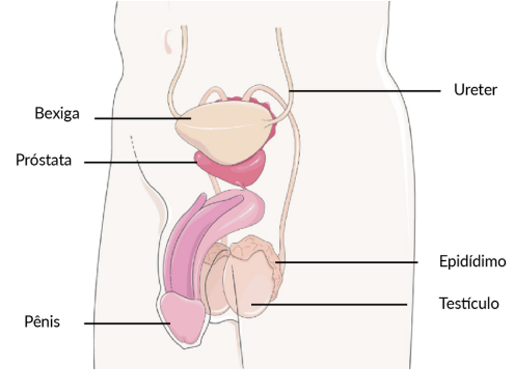

O sistema genital masculino é composto de bolsa escrotal, testículos, vias espermáticas (epidídimo, ducto deferente e uretra), glândulas sexuais acessórias (glândulas seminais, próstata e glândulas bulbouretrais) e pênis. Clique na imagem e conheça mais sobre a anatomia do sistema reprodutor masculino.
Anatomia do sistema reprodutor masculino.

Fonte: Servier Medical Art, 2024.
Bolsa escrotal
No interior da bolsa escrotal, encontramos as gônadas masculinas, mais conhecidas como testículos. Nos testículos, existem milhares de tubos enovelados chamados de túbulos seminíferos, nos quais os espermatozoides são produzidos e nutridos pelas células de Sertoli. A bolsa escrotal, além de proteger os testículos, tem a função de manter a temperatura deles em torno de um grau abaixo da temperatura corporal, fundamental para que ocorra a produção dos espermatozoides.
Ducto ejaculatório
Depois de formados, os espermatozoides saem dos túbulos seminíferos para os ductos eferentes, de onde seguem para os epidídimos. Lá, os espermatozoides ganharão mobilidade e serão encaminhados para os ductos deferentes. Estes são dois tubos que saem dos testículos (um de cada testículo) e passam pelo abdome, contornando a bexiga até se fundirem ao ducto das glândulas seminais, compondo o ducto ejaculatório, que desemboca na uretra. Todos os espermatozoides produzidos ficam armazenados principalmente no epidídimo e nos ductos deferentes até serem eliminados na ejaculação.
Glândulas seminais
As glândulas seminais, também chamadas de vesículas seminais, são encontradas atrás da bexiga e acima da próstata. Elas produzem um líquido alcalino que lubrifica e neutraliza a uretra, preparando-a para a passagem do sêmen. Por ser de natureza alcalina, esse líquido neutraliza o ambiente ácido da uretra masculina e do trato genital feminino, tornando este último ideal para os espermatozoides. Esse líquido produzido por essas glândulas compõe cerca de 60% do volume total do esperma, também chamado de sêmen.
Próstata
A próstata tem aproximadamente 4 cm de diâmetro e se localiza abaixo da bexiga urinária. Ela produz uma secreção, também nutritiva para os espermatozoides, que constitui entre 15% e 30% do esperma.
Glândulas bulbouretrais
Localizadas abaixo da próstata encontramos as glândulas bulbouretrais, também conhecidas como glândulas de Cowper. Durante a excitação sexual, essas glândulas produzem um líquido alcalino que é lançado na uretra com a função de limpá-la, para que haja diminuição de espermatozoides danificados durante a ejaculação.
Uretra
A uretra é um canal que passa por dentro do pênis e é comum aos sistemas urinário e genital, ou seja, por esse canal são conduzidos o esperma e a urina.
Pênis
O pênis possui tecidos esponjosos ricos em vasos sanguíneos: os corpos cavernosos e o corpo esponjoso. Os corpos cavernosos do pênis são formados por tecido erétil que se enche de sangue durante a excitação sexual, fazendo com que ocorra a ereção e possibilitando o ato sexual. Na extremidade do pênis, encontramos a glande, que é protegida pelo prepúcio.

O pênis possui tecidos esponjosos ricos em vasos sanguíneos: os corpos cavernosos e o corpo esponjoso. Os corpos cavernosos do pênis são formados por tecido erétil que se enche de sangue durante a excitação sexual, fazendo com que ocorra a ereção e possibilitando o ato sexual. Na extremidade do pênis, encontramos a glande, que é protegida pelo prepúcio.